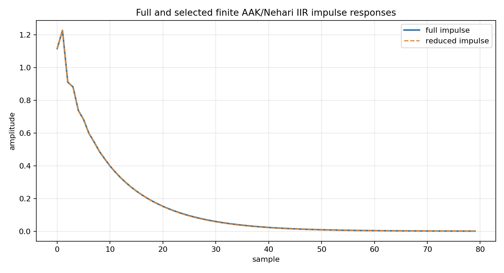
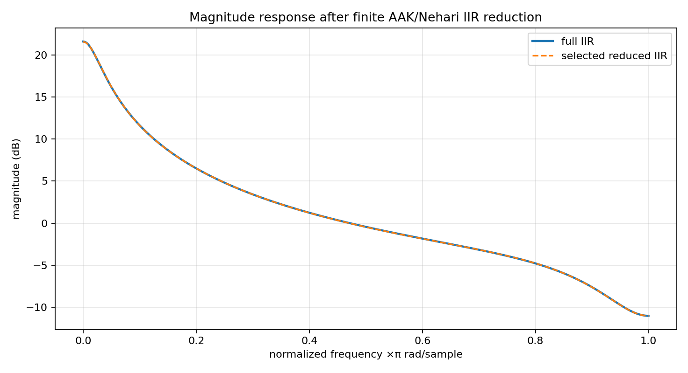
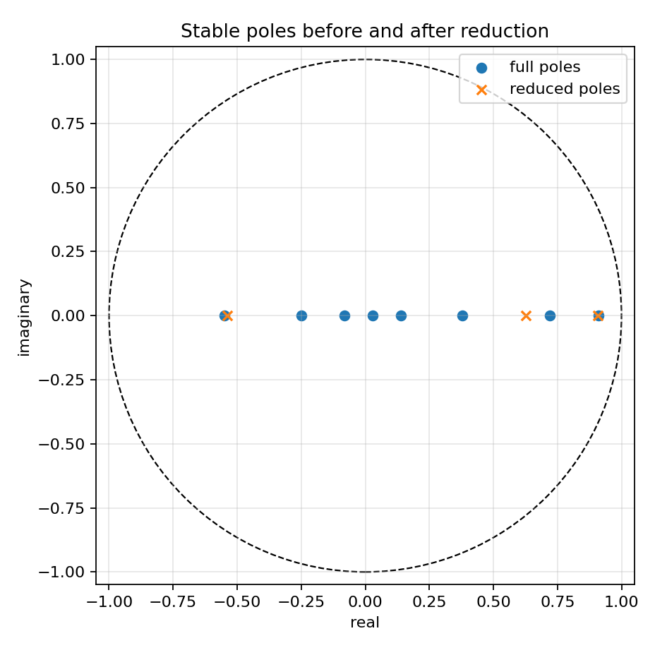
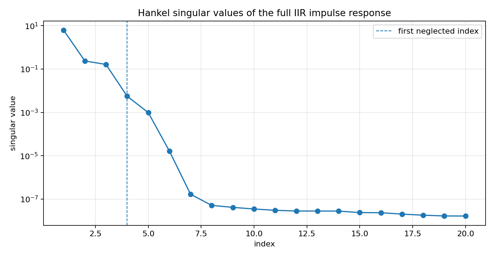

Finite-section AAK/Nehari reduction of a stable IIR filter¶
Tutorial goal
Apply the finite AAK/Nehari tail reducer to a full stable SISO IIR filter and compare the selected reduced model.
Note
New to the terminology? See the lattice DSP concept map and the causality/data-use guide for how online, offline, block, and MIMO examples should be read.
Context¶
The previous finite AAK/Nehari pages work with abstract tail sequences. This tutorial closes the loop for DSP users: start with a stable higher-order lattice/IIR filter, compute its impulse response, select a reduced rational model, convert the selected denominator back to reflection coefficients, and run the reduced filter on real signals.
The point is practical rather than absolute optimality. The current implementation is a finite-section SISO reduction candidate with Hankel, Schmidt-pair, and rational diagnostics; it is not a full infinite-dimensional AAK/Nehari solver.
Key idea and equations¶
A stable full model has transfer function
The finite AAK/Nehari workflow uses the impulse response h_n to build a finite Hankel
matrix, selects a rational order r, and returns a reduced model
whose denominator is converted back to reflection coefficients when stable.
How to read the result¶
Look for the selected rank, impulse and magnitude-response error, pole radius below one, and filtering speedup on a random batch.
Run command¶
python examples/finite_aak_iir_reduction_demo.py
Run status¶
Return code: 0
Captured stdout¶
full IIR order: 8
finite Hankel matrix: 96 x 96
candidate ranks: [2, 3, 4, 5, 6, 8]
selected rank: 3
selected accepted: True
selected pole radius: 0.9074
relative impulse error: 3.863e-03
batch output SNR: 48.27 dB
batch output rel MSE: 1.488e-05
max magnitude error: 0.039 dB
full filter median time: 0.0205 s
reduced filter median time: 0.0094 s
filter speedup: 2.18x
Figures¶
{kind=link}

finite_aak_iir_impulse_response.png¶
{kind=link}

finite_aak_iir_magnitude_response.png¶
{kind=link}

finite_aak_iir_poles.png¶
{kind=link}

finite_aak_iir_singular_values.png¶
Generated data files¶
Source code¶
1"""Tutorial: finite-section AAK/Nehari reduction of a stable SISO IIR filter.
2
3The previous finite AAK/Nehari tutorials work directly with an abstract tail
4sequence. This tutorial closes the loop for DSP users: start with a stable
5higher-order lattice/IIR filter, compute its impulse response, select a reduced
6rational model with ``finite_aak_reduce_iir``, and compare impulse response,
7frequency response, and filtering speed.
8
9This is still a finite-section reduction candidate, not a full
10infinite-dimensional AAK/Nehari solver. Its purpose is practical: demonstrate
11how the current finite Hankel/Schmidt-pair/rational workflow can produce a
12stable lower-order IIR model that is cheaper to run.
13"""
14
15from __future__ import annotations
16
17import csv
18import math
19import os
20import statistics
21import time
22from pathlib import Path
23from collections.abc import Callable
24
25import numpy as np
26
27import lattice_dsp as ld
28
29
30def artifact_dir() -> Path:
31 path = Path(os.environ.get("LATTICE_DSP_ARTIFACT_DIR", "reports/example-artifacts"))
32 path.mkdir(parents=True, exist_ok=True)
33 return path
34
35
36def impulse_from_poles(poles: np.ndarray, weights: np.ndarray, n_terms: int) -> np.ndarray:
37 n = np.arange(n_terms, dtype=float)
38 return np.sum(weights[:, None] * poles[:, None] ** n[None, :], axis=0)
39
40
41def numerator_from_impulse_and_denominator(impulse: np.ndarray, denominator: np.ndarray) -> np.ndarray:
42 order = denominator.size - 1
43 numerator = np.zeros(order + 1, dtype=float)
44 for i in range(order + 1):
45 numerator[i] = sum(float(denominator[j]) * float(impulse[i - j]) for j in range(i + 1))
46 return numerator
47
48
49def synthetic_high_order_iir() -> dict[str, np.ndarray]:
50 """Return a stable full model whose impulse response has compressible modes."""
51
52 poles = np.array([0.91, 0.72, -0.55, 0.38, -0.25, 0.14, -0.08, 0.03], dtype=float)
53 weights = np.array([1.0, 0.25, -0.18, 0.07, -0.035, 0.015, -0.007, 0.003], dtype=float)
54 denominator = np.asarray(np.poly(poles), dtype=float)
55 impulse = impulse_from_poles(poles, weights, 512)
56 numerator = numerator_from_impulse_and_denominator(impulse, denominator)
57 reflection = np.asarray(ld.denominator_to_reflection(denominator.tolist()), dtype=float)
58 return {
59 "poles": poles,
60 "weights": weights,
61 "denominator": denominator,
62 "numerator": numerator,
63 "reflection": reflection,
64 "impulse": impulse,
65 }
66
67
68def frequency_response(denominator: np.ndarray, numerator: np.ndarray, n_freq: int = 512) -> tuple[np.ndarray, np.ndarray]:
69 w = np.linspace(0.0, math.pi, n_freq)
70 z = np.exp(-1j * w)
71 num = np.zeros_like(z, dtype=np.complex128)
72 den = np.zeros_like(z, dtype=np.complex128)
73 for k, coeff in enumerate(numerator):
74 num += coeff * z**k
75 for k, coeff in enumerate(denominator):
76 den += coeff * z**k
77 return w, num / den
78
79
80def median_time(fn: Callable[[], np.ndarray], repeats: int) -> tuple[float, np.ndarray]:
81 times: list[float] = []
82 result: np.ndarray | None = None
83 for _ in range(repeats):
84 t0 = time.perf_counter()
85 result = fn()
86 times.append(time.perf_counter() - t0)
87 assert result is not None
88 return statistics.median(times), result
89
90
91def process(reflection: np.ndarray, numerator: np.ndarray, x: np.ndarray) -> np.ndarray:
92 return np.asarray(ld.process_batch(reflection.tolist(), numerator.tolist(), x), dtype=float)
93
94
95def snr_db(reference: np.ndarray, estimate: np.ndarray) -> float:
96 error = reference - estimate
97 return 10.0 * math.log10((float(np.mean(reference * reference)) + 1e-30) / (float(np.mean(error * error)) + 1e-30))
98
99
100def write_csv(path: Path, rows: list[dict[str, object]]) -> None:
101 with path.open("w", newline="", encoding="utf-8") as f:
102 writer = csv.DictWriter(f, fieldnames=list(rows[0]))
103 writer.writeheader()
104 writer.writerows(rows)
105
106
107def main() -> None:
108 out_dir = artifact_dir()
109 model = synthetic_high_order_iir()
110 rows = cols = 96
111 n_impulse = 192
112 ranks = [2, 3, 4, 5, 6, 8]
113 criteria = ld.FiniteNehariCandidateCriteria(
114 max_tail_error=1.0e-3,
115 max_rational_error=5.0e-3,
116 max_pole_radius=0.99,
117 )
118
119 reduction = ld.finite_aak_reduce_iir(
120 model["reflection"],
121 model["numerator"],
122 ranks=ranks,
123 n_impulse=n_impulse,
124 rows=rows,
125 cols=cols,
126 criteria=criteria,
127 attach_certificate=True,
128 )
129
130 selected = reduction["selected"]
131 reduced_reflection = np.asarray(reduction["reduced_reflection"], dtype=float)
132 reduced_numerator = np.asarray(reduction["reduced_numerator"], dtype=float)
133 reduced_denominator = np.asarray(reduction["reduced_denominator"], dtype=float)
134
135 rng = np.random.default_rng(123)
136 channels = 32
137 samples = 30000
138 x = rng.normal(size=(channels, samples)).astype(np.float64)
139 full_time, y_full = median_time(lambda: process(model["reflection"], model["numerator"], x), repeats=3)
140 reduced_time, y_reduced = median_time(lambda: process(reduced_reflection, reduced_numerator, x), repeats=3)
141 filter_speedup = full_time / reduced_time
142 snr = snr_db(y_full, y_reduced)
143 rel_mse = float(np.mean((y_full - y_reduced) ** 2) / (np.mean(y_full**2) + 1e-30))
144
145 w, h_full = frequency_response(model["denominator"], model["numerator"])
146 _, h_reduced = frequency_response(reduced_denominator, reduced_numerator)
147 full_db = 20.0 * np.log10(np.maximum(np.abs(h_full), 1e-14))
148 reduced_db = 20.0 * np.log10(np.maximum(np.abs(h_reduced), 1e-14))
149 max_mag_error_db = float(np.max(np.abs(full_db - reduced_db)))
150
151 summary_rows = []
152 for row in reduction["candidates"]:
153 summary_rows.append(
154 {
155 "rank": row["rank"],
156 "sigma_next": row["sigma_next"],
157 "hankelized_tail_error": row["hankelized_tail_error"],
158 "rational_error": row["rational_error"],
159 "max_pole_radius": row["max_pole_radius"],
160 "accepted": row["accepted"],
161 }
162 )
163 summary_rows.append(
164 {
165 "rank": "selected",
166 "sigma_next": selected["sigma_next"],
167 "hankelized_tail_error": reduction["relative_impulse_error"],
168 "rational_error": selected["rational_error"],
169 "max_pole_radius": selected["max_pole_radius"],
170 "accepted": reduction["accepted"],
171 }
172 )
173 csv_path = out_dir / "finite_aak_iir_reduction_summary.csv"
174 write_csv(csv_path, summary_rows)
175
176 print("full IIR order:", model["reflection"].size)
177 print("finite Hankel matrix:", f"{rows} x {cols}")
178 print("candidate ranks:", ranks)
179 print("selected rank:", reduction["selected_rank"])
180 print("selected accepted:", reduction["accepted"])
181 print("selected pole radius:", f"{selected['max_pole_radius']:.4f}")
182 print("relative impulse error:", f"{reduction['relative_impulse_error']:.3e}")
183 print("batch output SNR:", f"{snr:.2f} dB")
184 print("batch output rel MSE:", f"{rel_mse:.3e}")
185 print("max magnitude error:", f"{max_mag_error_db:.3f} dB")
186 print("full filter median time:", f"{full_time:.4f} s")
187 print("reduced filter median time:", f"{reduced_time:.4f} s")
188 print("filter speedup:", f"{filter_speedup:.2f}x")
189 print(f"wrote {csv_path}")
190
191 try:
192 import matplotlib.pyplot as plt
193 except Exception:
194 print("matplotlib is not installed; skipped figures")
195 return
196
197 singular_values = np.asarray(selected["hankel_singular_values"], dtype=float)
198 fig, ax = plt.subplots(figsize=(8.8, 4.6))
199 ax.semilogy(np.arange(1, 21), singular_values[:20], marker="o")
200 ax.axvline(reduction["selected_rank"] + 1, linestyle="--", linewidth=1.0, label="first neglected index")
201 ax.set_title("Hankel singular values of the full IIR impulse response")
202 ax.set_xlabel("index")
203 ax.set_ylabel("singular value")
204 ax.grid(True, alpha=0.3)
205 ax.legend()
206 fig.tight_layout()
207 path = out_dir / "finite_aak_iir_singular_values.png"
208 fig.savefig(path, dpi=160)
209 print(f"wrote {path}")
210
211 fig2, ax2 = plt.subplots(figsize=(9.2, 5.0))
212 n = np.arange(80)
213 ax2.plot(n, reduction["full_impulse_response"][:80], label="full impulse", linewidth=2.0)
214 ax2.plot(n, reduction["reduced_impulse_response"][:80], "--", label="reduced impulse")
215 ax2.set_title("Full and selected finite AAK/Nehari IIR impulse responses")
216 ax2.set_xlabel("sample")
217 ax2.set_ylabel("amplitude")
218 ax2.grid(True, alpha=0.3)
219 ax2.legend()
220 fig2.tight_layout()
221 path2 = out_dir / "finite_aak_iir_impulse_response.png"
222 fig2.savefig(path2, dpi=160)
223 print(f"wrote {path2}")
224
225 fig3, ax3 = plt.subplots(figsize=(9.2, 5.0))
226 ax3.plot(w / math.pi, full_db, label="full IIR", linewidth=2.0)
227 ax3.plot(w / math.pi, reduced_db, "--", label="selected reduced IIR")
228 ax3.set_title("Magnitude response after finite AAK/Nehari IIR reduction")
229 ax3.set_xlabel("normalized frequency ×π rad/sample")
230 ax3.set_ylabel("magnitude (dB)")
231 ax3.grid(True, alpha=0.3)
232 ax3.legend()
233 fig3.tight_layout()
234 path3 = out_dir / "finite_aak_iir_magnitude_response.png"
235 fig3.savefig(path3, dpi=160)
236 print(f"wrote {path3}")
237
238 fig4, ax4 = plt.subplots(figsize=(5.8, 5.8))
239 circle = plt.Circle((0.0, 0.0), 1.0, fill=False, linestyle="--")
240 ax4.add_artist(circle)
241 ax4.scatter(np.real(model["poles"]), np.imag(model["poles"]), label="full poles")
242 ax4.scatter(np.real(selected["poles"]), np.imag(selected["poles"]), marker="x", label="reduced poles")
243 ax4.set_aspect("equal", adjustable="box")
244 ax4.set_xlim(-1.05, 1.05)
245 ax4.set_ylim(-1.05, 1.05)
246 ax4.set_xlabel("real")
247 ax4.set_ylabel("imaginary")
248 ax4.set_title("Stable poles before and after reduction")
249 ax4.grid(True, alpha=0.3)
250 ax4.legend()
251 fig4.tight_layout()
252 path4 = out_dir / "finite_aak_iir_poles.png"
253 fig4.savefig(path4, dpi=160)
254 print(f"wrote {path4}")
255
256
257if __name__ == "__main__":
258 main()